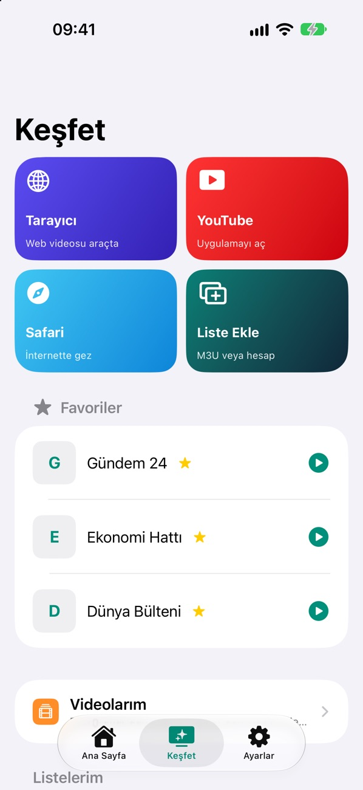
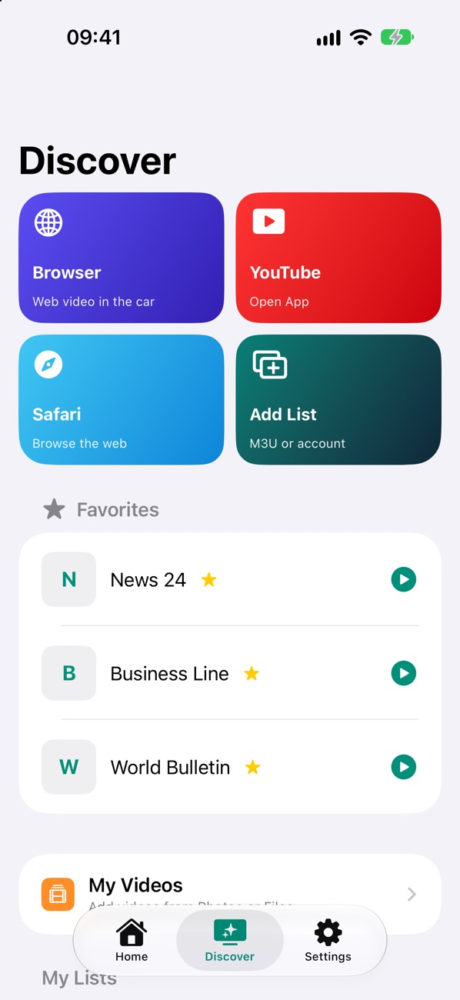
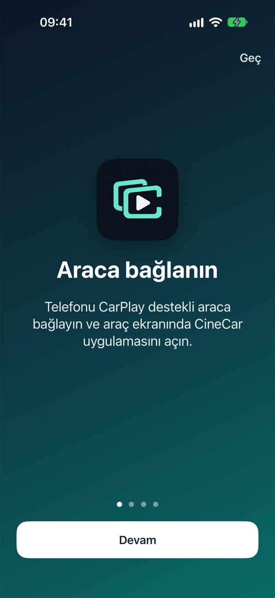
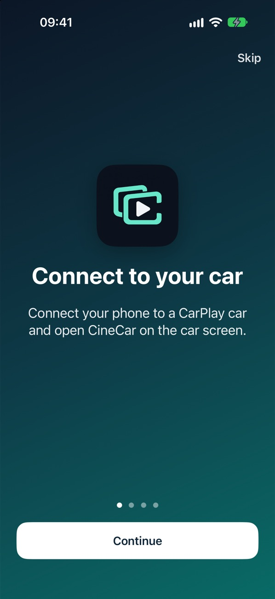
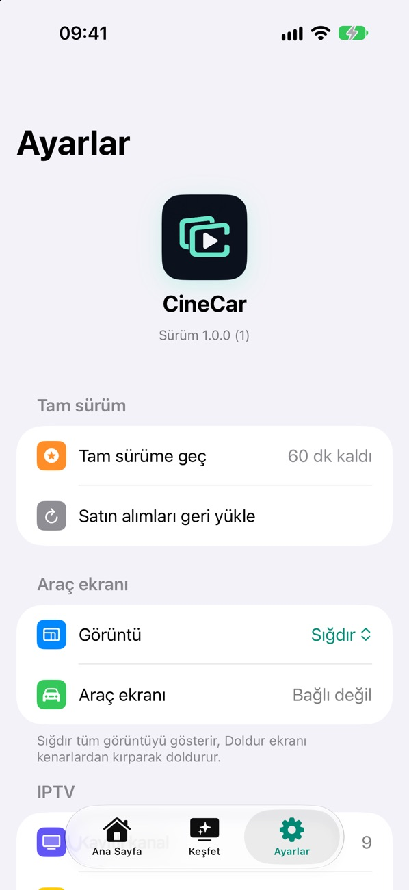
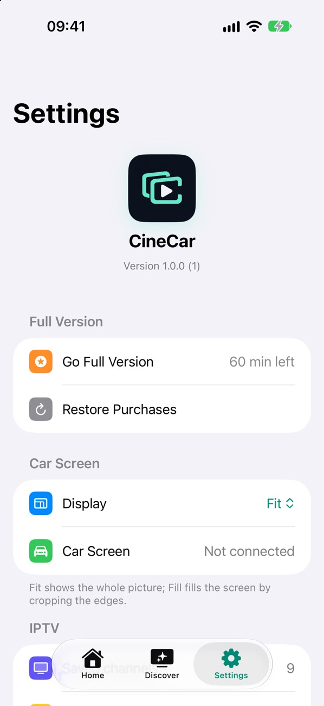

Telefonunuz, aracın büyük ekranında.
Your iPhone, on the car's big screen.
CineCar, iPhone ekranınızı CarPlay destekli aracınızın ekranına taşır. Araç park halindeyken yolcular YouTube'u, IPTV kanallarını ve kendi videolarını büyük ekranda izler.
CineCar brings your iPhone screen to the display of your CarPlay car. While parked, passengers watch YouTube, IPTV channels and their own videos on the big screen.
60 dakika ücretsiz deneyin. CarPlay destekli araç gerekir.
Try it free for 60 minutes. Requires a car with CarPlay.
ÖzelliklerFeatures
Yolculuk molası için her şey tek uygulamada
Everything for the stop, in one app
Kurulum dakikalar sürer. Telefon kumandaya dönüşür, ses aracın hoparlörlerinden gelir.
Set up in minutes. Your phone becomes the remote, and sound plays through the car speakers.
Tek dokunuşla yansıtma
One-tap mirroring
Telefonda açtığınız her uygulama araç ekranında görünür.
Whatever you open on your phone appears on the car screen.
IPTV ve M3U
IPTV and M3U
Bağlantı, dosya, QR kod veya IPTV hesabınızla liste ekleyin. Kategoriler, logolar ve TV rehberi.
Add lists by link, file, QR code or your IPTV account. Categories, logos and a TV guide.
Araçta web videosu
Web video in the car
Dahili tarayıcıda açtığınız videoyu araç ekranına gönderin, telefondan kontrol edin.
Send a video from the built-in browser to the car screen and control it from your phone.
Videolarım
My Videos
Fotoğraflar'dan veya Dosyalar'dan video ekleyin, internetsiz izleyin.
Add videos from Photos or Files and watch them offline.
Akıllı oynatıcı
Smart player
Ses ve altyazı seçimi, hız, uyku zamanlayıcısı, kaldığı yerden devam ve direksiyondan kanal değiştirme.
Audio and subtitle choice, speed, sleep timer, resume, and channel switching from the steering wheel.
Gizlilik önce gelir
Private by design
Hesap, reklam ve izleme yok. Ekran görüntüsü telefondan dışarı çıkmaz.
No account, ads or tracking. Screen images never leave your phone.
Nasıl çalışırHow it works
Üç adımda büyük ekran
Big screen in three steps
Ek cihaz veya kablo gerekmez; CarPlay bağlantınız yeterli.
No extra device or cable; your CarPlay connection is enough.
Araca bağlanın
Connect to your car
Telefonu CarPlay'e bağlayın ve araç ekranında CineCar'ı açın.
Connect your phone to CarPlay and open CineCar on the car screen.
Araca Yansıt'a dokunun
Tap Mirror to Car
Telefonda yansıtmayı başlatın; durdurmak için yeniden dokunun.
Start mirroring on your phone; tap again to stop.
İzlemeye başlayın
Start watching
Bir video, kanal veya uygulama açın; araç ekranında görünsün.
Open a video, channel or app and it shows on the car screen.
EkranlarScreens
Sade, hızlı, Türkçe ve İngilizce
Simple, fast, in English and Turkish






FiyatPricing
Önce deneyin, sonra karar verin
Try first, then decide
Güncel fiyatlar App Store'da, kendi para biriminizde gösterilir. Abonelikleri iPhone Ayarlar'dan istediğiniz an iptal edebilirsiniz.
Current prices are shown in the App Store in your currency. Cancel subscriptions anytime in iPhone Settings.
Aylık
Monthly
Ara sıra yolculuk yapanlar için.
For the occasional trip.
Yıllık
Yearly
En avantajlı abonelik.
The best-value subscription.
Ömür boyu
Lifetime
Bir kez ödeyin, hep kullanın.
Pay once, keep it forever.
SorularQuestions
Sık sorulanlar
Frequently asked
Hangi araçlarda çalışır?
CarPlay destekleyen araçlarda. Araç park halindeyken kullanılması tavsiye edilir.
İçerik sağlıyor musunuz?
Hayır. CineCar bir oynatıcıdır; kanal veya film sunmaz. Eklediğiniz yayınları kullanma hakkına sahip olmanız gerekir.
Kanal açılmazsa ne olur?
Uygulama sunucunun cevabına bakar ve nedenini yazar: üyelik süresi, bölge kısıtı, eskimiş liste veya desteklenmeyen biçim.
Verilerim nereye gidiyor?
Hiçbir yere. Listeleriniz, favorileriniz ve ayarlarınız yalnızca telefonunuzda kalır. Gizlilik politikası
Which cars does it work with?
Cars with CarPlay. We recommend using it while the car is parked.
Do you provide content?
No. CineCar is a player; it offers no channels or movies. You must have the right to use the streams you add.
What if a channel won't open?
The app checks the server's reply and tells you why: expired subscription, region lock, outdated list or unsupported format.
Where does my data go?
Nowhere. Your lists, favorites and settings stay on your phone. Privacy policy
Güvenlik: Araç park halindeyken ve yolcular tarafından kullanılması tavsiye edilir. Sürücü, sürüş sırasında video izlememelidir.
Safety: We recommend using it while the car is parked and by passengers. The driver should not watch video while driving.